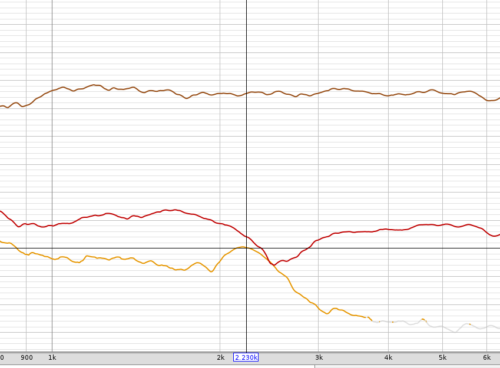

On the bench is the same DSP board, now running a crude dynamic linear-phase EQ in code. The first results are promising, but the code is as rough as the idea.
Linear phase EQ, part 2
The fun in coding your own DSP is that you quickly learn this Egg of Columbus: once you free your mind of thinking in the frequency domain (paraphrasing Moroder), everything you dream up about multiplying functions in the frequency domain — like applying dynamic EQ — can be a rather simple arithmetic operation in the discrete sampled time domain.
So EQ can work out as follows: apply the reverse filter to the signal stream on a sample-by-sample basis. Subtract that stream from the original stream, also sample by sample. Take care you do your calculation on the correct sample!
Mind-boggling to realise that every single sample is a representation of the music playing right at that moment in time.
void doProces(q15_t* Lin, q15_t* Rin, q15_t* Lout, q15_t* Rout)
{
arm_sub_q15(Rin, Lin, Mono, n);
arm_q15_to_float(Mono, Monofl, n); /* adding balanced input to mono signal */
arm_fir_f32(&SLF, Monofl, Low, n);
arm_fir_f32(&SHF, Monofl, High, n);
arm_fir_f32(&SEQ, Monofl, EQout, n); /* several FIR filters */
/* RMS threshold + attack/release: blocksize=48, sample freq=48kHz --> 1 mSec per callback */
arm_rms_f32(EQout, n, &rms);
if ((rms > 0.005) && (gainEQ <= 0.8)) {
gainEQ = gainEQ + 0.1;
}
if ((rms < 0.005) && (gainEQ > 0)) {
gainEQ = gainEQ - 0.005;
}
/* scaling + actual EQ subtraction */
arm_scale_f32(EQout, gainEQ, EQout, n);
arm_sub_f32(High, EQout, Result, n);
/* revert float back to signed int. Lout = low, Rout = high */
arm_float_to_q15(Low, Lout, n);
arm_float_to_q15(Result, Rout, n);
}That is a very crude bit of code to run the tests. Basically I use FIR filters to split the stream into three parts: high to feed the HF horn, low to feed the speaker, and a bell-shaped EQ stream around 2200 Hz to do the magic. Totally mocked up out of thin air (and some prior listening). If you are really interested, you can work out the attack/release timing and chosen gain slopes (also derived with some listening).
Promising conclusions
Now for the promising conclusions: yes. EQ-ing with dynamic linear-phase EQ does help to create a loudspeaker that is way more versatile: you can play it more dynamically (read: louder) without being annoyed by that ripping horn distortion.
But care should be taken not to overdo the processing, because it sounds like that: over-processing. Also, as live-sound engineers we are totally used to how all these elements like loudspeakers and microphones behave, and in fact make use of the nonlinearities in the creative process. More research is required.
Here is some food for thought: below is a measurement of the first two distortions of the HF horn under test. We all know the second harmonic is OK and the third is bad, right? Now look where I chose (by ear) that EQ point: right at 2.2k, where the third bumps up (and the second goes down).


Brown = SPL 1st harmonic. Red = SPL 2nd harmonic. Yellow = SPL 3rd harmonic.
One more thing I would like to add: in my discussions with my great audio friend Prof. Dr. SA (you know who you are), he once coined the phrase equal-group-distortion. Naturally this is nothing; what he was saying is that it is the discontinuities and bumps in distortion patterns that make us jump into action.